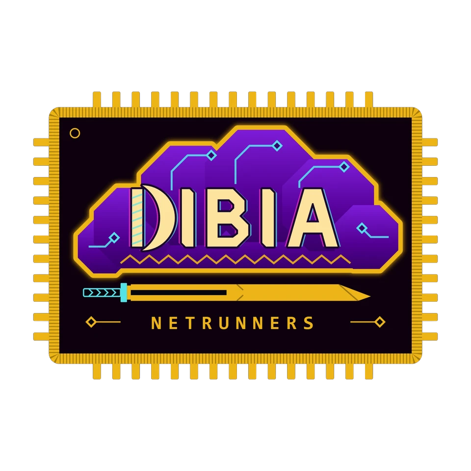

GENIN 010 CHUNIN 101 JONIN 001 ANBU 110 KAGE 011 CELL 100 VILLAGE 010 GIVE 101 WAKANDA 110 GENIN 010 CHUNIN 101 JONIN 001 ANBU 110 KAGE 011 CELL 100 VILLAGE 010 GIVE 101 WAKANDA 110 GENIN 010 CHUNIN 101 JONIN 001 ANBU 110 KAGE 011 CELL 100 VILLAGE 010 GIVE 101 WAKANDA 110
ENIN 010 CHUNIN 101 JONIN 001 ANBU 110 KAGE 011 CELL 100 VILLAGE 010 GIVE 101 WAKANDA 110 GENIN 010 CHUNIN 101 JONIN 001 ANBU 110 KAGE 011 CELL 100 VILLAGE 010 GIVE 101 WAKANDA 110 GENIN 010 CHUNIN 101 JONIN 001 ANBU 110 KAGE 011 CELL 100 VILLAGE 010 GIVE 101 WAKANDA 110
NIN 010 CHUNIN 101 JONIN 001 ANBU 110 KAGE 011 CELL 100 VILLAGE 010 GIVE 101 WAKANDA 110 GENIN 010 CHUNIN 101 JONIN 001 ANBU 110 KAGE 011 CELL 100 VILLAGE 010 GIVE 101 WAKANDA 110 GENIN 010 CHUNIN 101 JONIN 001 ANBU 110 KAGE 011 CELL 100 VILLAGE 010 GIVE 101 WAKANDA 110
IN 010 CHUNIN 101 JONIN 001 ANBU 110 KAGE 011 CELL 100 VILLAGE 010 GIVE 101 WAKANDA 110 GENIN 010 CHUNIN 101 JONIN 001 ANBU 110 KAGE 011 CELL 100 VILLAGE 010 GIVE 101 WAKANDA 110 GENIN 010 CHUNIN 101 JONIN 001 ANBU 110 KAGE 011 CELL 100 VILLAGE 010 GIVE 101 WAKANDA 110
N 010 CHUNIN 101 JONIN 001 ANBU 110 KAGE 011 CELL 100 VILLAGE 010 GIVE 101 WAKANDA 110 GENIN 010 CHUNIN 101 JONIN 001 ANBU 110 KAGE 011 CELL 100 VILLAGE 010 GIVE 101 WAKANDA 110 GENIN 010 CHUNIN 101 JONIN 001 ANBU 110 KAGE 011 CELL 100 VILLAGE 010 GIVE 101 WAKANDA 110
010 CHUNIN 101 JONIN 001 ANBU 110 KAGE 011 CELL 100 VILLAGE 010 GIVE 101 WAKANDA 110 GENIN 010 CHUNIN 101 JONIN 001 ANBU 110 KAGE 011 CELL 100 VILLAGE 010 GIVE 101 WAKANDA 110 GENIN 010 CHUNIN 101 JONIN 001 ANBU 110 KAGE 011 CELL 100 VILLAGE 010 GIVE 101 WAKANDA 110
010 CHUNIN 101 JONIN 001 ANBU 110 KAGE 011 CELL 100 VILLAGE 010 GIVE 101 WAKANDA 110 GENIN 010 CHUNIN 101 JONIN 001 ANBU 110 KAGE 011 CELL 100 VILLAGE 010 GIVE 101 WAKANDA 110 GENIN 010 CHUNIN 101 JONIN 001 ANBU 110 KAGE 011 CELL 100 VILLAGE 010 GIVE 101 WAKANDA 110
10 CHUNIN 101 JONIN 001 ANBU 110 KAGE 011 CELL 100 VILLAGE 010 GIVE 101 WAKANDA 110 GENIN 010 CHUNIN 101 JONIN 001 ANBU 110 KAGE 011 CELL 100 VILLAGE 010 GIVE 101 WAKANDA 110 GENIN 010 CHUNIN 101 JONIN 001 ANBU 110 KAGE 011 CELL 100 VILLAGE 010 GIVE 101 WAKANDA 110
0 CHUNIN 101 JONIN 001 ANBU 110 KAGE 011 CELL 100 VILLAGE 010 GIVE 101 WAKANDA 110 GENIN 010 CHUNIN 101 JONIN 001 ANBU 110 KAGE 011 CELL 100 VILLAGE 010 GIVE 101 WAKANDA 110 GENIN 010 CHUNIN 101 JONIN 001 ANBU 110 KAGE 011 CELL 100 VILLAGE 010 GIVE 101 WAKANDA 110
CHUNIN 101 JONIN 001 ANBU 110 KAGE 011 CELL 100 VILLAGE 010 GIVE 101 WAKANDA 110 GENIN 010 CHUNIN 101 JONIN 001 ANBU 110 KAGE 011 CELL 100 VILLAGE 010 GIVE 101 WAKANDA 110 GENIN 010 CHUNIN 101 JONIN 001 ANBU 110 KAGE 011 CELL 100 VILLAGE 010 GIVE 101 WAKANDA 110
CHUNIN 101 JONIN 001 ANBU 110 KAGE 011 CELL 100 VILLAGE 010 GIVE 101 WAKANDA 110 GENIN 010 CHUNIN 101 JONIN 001 ANBU 110 KAGE 011 CELL 100 VILLAGE 010 GIVE 101 WAKANDA 110 GENIN 010 CHUNIN 101 JONIN 001 ANBU 110 KAGE 011 CELL 100 VILLAGE 010 GIVE 101 WAKANDA 110
HUNIN 101 JONIN 001 ANBU 110 KAGE 011 CELL 100 VILLAGE 010 GIVE 101 WAKANDA 110 GENIN 010 CHUNIN 101 JONIN 001 ANBU 110 KAGE 011 CELL 100 VILLAGE 010 GIVE 101 WAKANDA 110 GENIN 010 CHUNIN 101 JONIN 001 ANBU 110 KAGE 011 CELL 100 VILLAGE 010 GIVE 101 WAKANDA 110
UNIN 101 JONIN 001 ANBU 110 KAGE 011 CELL 100 VILLAGE 010 GIVE 101 WAKANDA 110 GENIN 010 CHUNIN 101 JONIN 001 ANBU 110 KAGE 011 CELL 100 VILLAGE 010 GIVE 101 WAKANDA 110 GENIN 010 CHUNIN 101 JONIN 001 ANBU 110 KAGE 011 CELL 100 VILLAGE 010 GIVE 101 WAKANDA 110
dibia@nnewi:~$ ./village --home digital_wakanda --task-force dibia
#DIGITALWAKANDA — THE HIDDEN VILLAGE
The village hidden in the algorithm.
#DigitalWakanda is the hidden village — a human compute organization: heterogeneous, autonomous, dynamic, distributed, decentralized, diaspora-preserving. DIBIA is its special task force: ninja-netrunners on both sides of the aisle, academic and industry, solving problems through rigorous research. Extraction is the enemy technique; giving is ours.
“You cannot transmute alone.”
